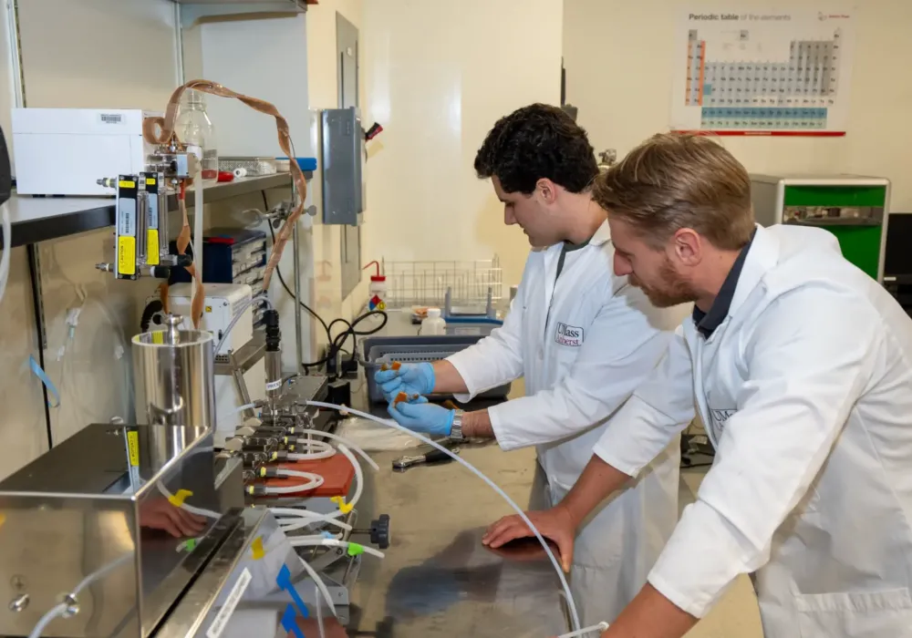
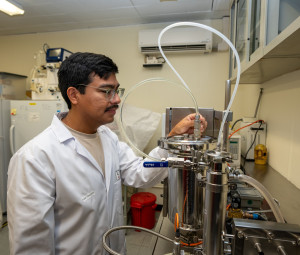
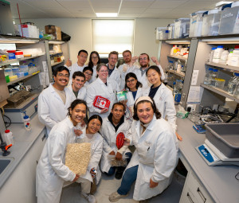
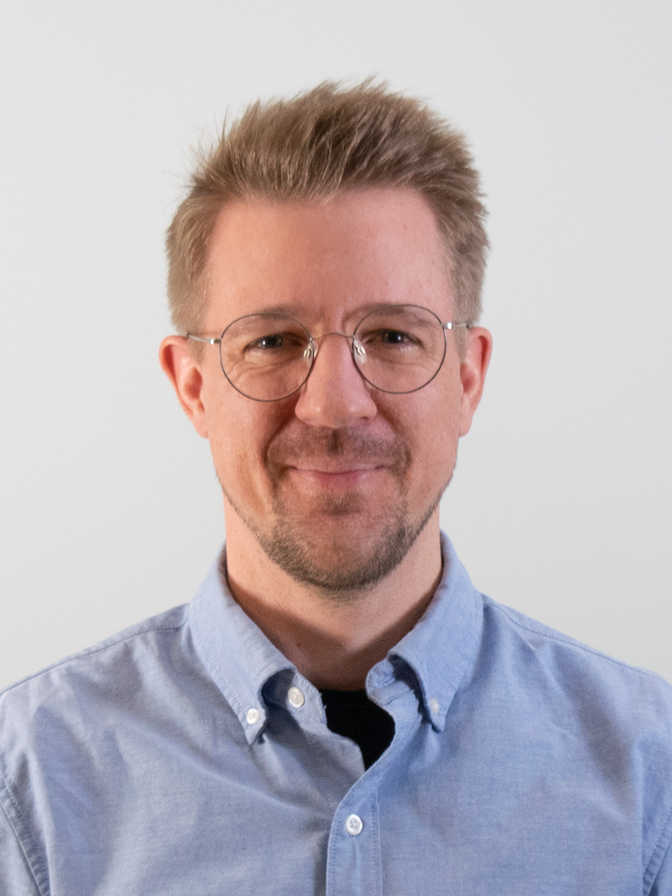

Current Research
Fungal Fermentation of Pulse Flours
Investigating the use of Aspergillus oryzae, Rhizopus oligosporus, and Neurospora crassa for transforming pea and chickpea substrates through fermentation processes.
Extrusion Processing & Texturization
Developing advanced extrusion techniques for plant-based protein structuring and creating novel textures in alternative meat and dairy products.
Food Material Science
Understanding the structure-function relationships in food systems, from molecular interactions to macroscale properties, with applications in texture design and stability.
Novel Protein Sources
Exploring emerging protein sources including microbial proteins, mycoproteins, and precision fermentation-derived ingredients for next-generation food applications.
Oleosome Extraction & Characterization
Developing advanced methods for extracting oleosomes from canola, hemp, and coconut sources, with focus on particle size, zeta potential, and structural characterization.
Precision Fermentation Technologies
Exploring cutting-edge precision fermentation applications and protein development for next-generation food systems.
Our Lab





Recent Publications
Pea Flours Display Wide-Ranging Intrinsic Physicochemical and Functional Traits
Matzen, E.D., Mikkelsen, M.S., McClements, J.D., & Grossmann, L. (2026). Study of 650 pea accessions revealing significant variations in functional properties with implications for food ingredient selection and optimization. Sustainable Food Proteins, 4(1):e70051.
Tailoring Anisotropy and Tenderness in High-Moisture Extruded Plant Protein Structures
Xie, H., Woern, C., Lam, K., & Grossmann, L. (2025). Novel approach using in-line microfoaming to control texture properties in extruded plant protein structures, achieving meat-like anisotropy and tenderness. Journal of Food Engineering.
Effect of Filamentous Mycoprotein on Hybrid Burger Patties
Ding, L. & Grossmann, L. (2025). Investigation of Neurospora crassa mycoprotein incorporation into hybrid meat products, demonstrating improved texture and liquid retention compared to soy-based alternatives. Sustainable Food Proteins, 3(4):e70041.
Tailoring Whole Seed Food Structures by Particle Filler Effects
Bhagat, K. & Grossmann, L. (2025). Investigation of thermal and enzymatic gel matrices using Jatropha curcas proteins, exploring particle filler effects on structure formation in whole seed systems. Food Research International.
Potential Plant Proteins for Functional Food Ingredients
Anyiam, P., Phongthai, S., Grossmann, L., & Rawdkuen, S. (2025). Comprehensive review of alternative plant protein sources beyond soybean, examining composition, utilization strategies, and technological challenges for food applications.
Properties and Cultivation of Fusarium spp. for Mycoprotein Production
Cheriaparambil, R. & Grossmann, L. (2025). Review of fermentation optimization parameters for sustainable mycoprotein production, including temperature, pH, substrate composition, and cultivation methods. Sustainable Food Proteins, 3:e70002.
Principal Investigator

Lutz Grossmann, PhD
Assistant Professor, Department of Food Science
I joined UMass Amherst in 2021 after completing my PhD in Food Science at the University of Hohenheim in Germany. My research focuses on pioneering holistic approaches along the protein value chain, combining processing technology with engineering, and fermentation concepts.
Join Our Research
We're always working on exciting new projects beyond what's listed here
MS Students (Thesis Track)
Conduct independent research in fermentation, extrusion, or food material science with opportunities to publish and gain hands-on experience equipping you for your next step in academia or industry
PhD Opportunities
Lead innovative projects funded by USDA, Good Food Institute, and industry partners while developing expertise in food technologies
Visiting Scholars
Join us for a research visit to collaborate and exchange expertise
Build your career through hands-on research and applied projects. Gain practical experience with industry-standard equipment, analytical techniques, and collaborative projects that prepare you for careers in academia, industry, or entrepreneurship.
How to Apply
Prospective students and visiting scholars should email: lkgrossmann@umass.edu
Please include: Your CV or resume and a brief statement explaining why you want to join the lab and your research interests
Contact & Opportunities
Location
Department of Food Science
University of Massachusetts Amherst
Amherst, MA 01003